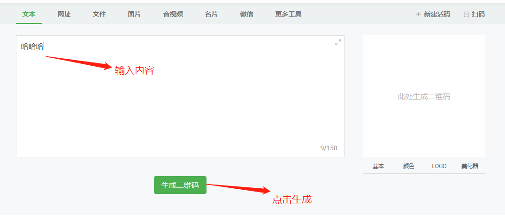
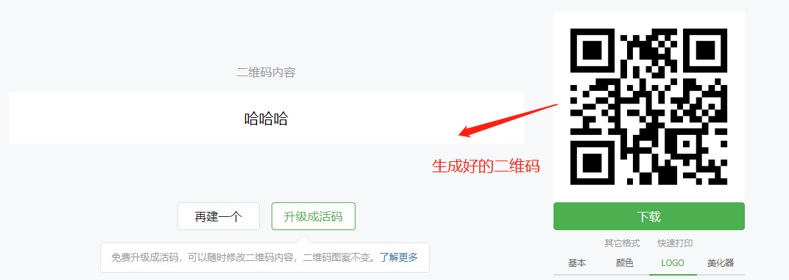
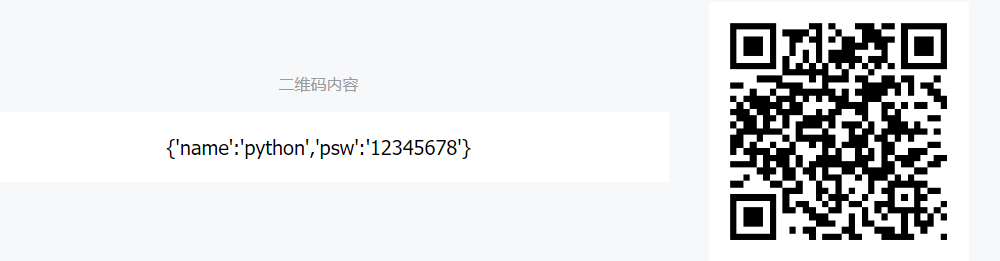

扫二维码测试
1.生成二维码
网站https://cli.im/ 可以生成二维码


2.摄像头扫描二维码连接wifi
- 把需要连接的wifi的账号和密码写成json数据，生成一个二维码

- 安装识别二维码的包
sudo apt-get install libzbar0 libzbar-dev
(如果是在ubuntu 还要执行sudo apt install python3-dev，这里是小车 不需要)
sudo pip3 install zbarlight
3. 扫描和设置二维码的参考代码代码
scan_qr_set_wifi.py
# coding=utf-8
import re
import cv2
import zbarlight
import time
from PIL import Image
import RPi.GPIO as GPIO
from os import system
# 步骤1:识别需要连接的二维码
Rpin = 5 # 红灯
Gpin = 6 # 绿灯
GPIO.setmode(GPIO.BCM)
GPIO.setup(Rpin, GPIO.OUT)
GPIO.setup(Gpin, GPIO.OUT)
led_flag = False
def led_on_off():
"""红灯闪烁 扫描期间调用"""
global led_flag
if led_flag:
GPIO.output(Rpin, GPIO.HIGH)
led_flag = False
else:
GPIO.output(Rpin, GPIO.LOW)
led_flag = True
def get_wifi_info_from_img(file_name):
"""
识别二维码返回数据
:param file_name:
:return:
"""
with open(file_name, 'rb') as image_file:
# 打开获取图片对象
image = Image.open(image_file)
# 分配存储并加载它
image.load()
# 识别图像返回数据 返回的数据在一个数组里
codes = zbarlight.scan_codes('qrcode', image)
if codes:
return codes[0]
else:
return None
def cv2_qr():
"""调用opencv通过zbarlight完成二维码识别"""
cap = cv2.VideoCapture(0)
while True:
# 获取一帧的数据
_, frame = cap.read()
# show a frame
# cv2.imshow("capture", frame)
file_name = "login_QR.jpg"
# 保存二维码图片
cv2.imwrite(file_name, frame)
# 获取二维码图片信息
ret = get_wifi_info_from_img(file_name)
if ret:
# 如果扫描到 红绿灯全亮
GPIO.output(Gpin, GPIO.HIGH)
GPIO.output(Rpin, GPIO.HIGH)
time.sleep(1)
break
if cv2.waitKey(1) & 0xFF == ord('q'):
break
led_on_off() # 扫描期间红灯闪烁
time.sleep(0.5)
# 释放资源
cap.release()
cv2.destroyAllWindows()
# 设置完关闭红绿灯
GPIO.output(Gpin, GPIO.LOW)
GPIO.output(Rpin, GPIO.LOW)
# 返回识别到的信息
return ret
def set_wifi_config(wifi_pass_str):
"""
设置wifi的配置
配置的大体原理：Linux配置WiFi以及记录密码是在一个特殊的路径下的文件中记录的
只要修改这个文件，按照它的要求进行修改，就可以完成wifi的设定
所以下面的代码，其实就是在组织一个特殊格式的字符串，然后写入到这个特定
的文件中，从而完成配置WiFi的目的
"""
wifi_config = """
country=GB
ctrl_interface=DIR=/var/run/wpa_supplicant GROUP=netdev
update_config=1
network={
ssid="%s"
psk="%s"
}"""
print("---------->>>>>>%s" % wifi_pass_str) # {'name':'python','psw':'12345678'}
# 把字符串转字典
wifi_dict = eval(wifi_pass_str)
print('转为字典:%s' % wifi_dict)
if wifi_dict:
# 获取wifi名字
wifi = wifi_dict['name']
# 获取fwifi密码
passwd = wifi_dict['psw']
wifi_configed = wifi_config % (wifi, passwd)
print("------->>>>>即将要配置的数据为:----%s" % wifi_configed)
with open("/etc/wpa_supplicant/wpa_supplicant.conf", "w") as f:
f.write(wifi_configed)
else:
print("二维码异常")
def reboot_pi():
"""
操作系统重启
"""
system("reboot")
- 按键按下，开始扫描的代码
set_wifi_main.py
# coding=utf-8
import RPi.GPIO as GPIO
import time
import scan_qr_set_wifi
BtnPin = 19 # 按钮引脚号
Rpin = 5 # 红灯引脚号
Gpin = 6 # 绿灯引脚号
def setup():
print('设置红绿灯和按钮初始化')
GPIO.setwarnings(False) # 取消引脚复用警告
GPIO.setmode(GPIO.BCM) # Numbers GPIOs by physical location
GPIO.setup(Gpin, GPIO.OUT) # Set Green Led Pin mode to output
GPIO.setup(Rpin, GPIO.OUT) # Set Red Led Pin mode to output
GPIO.setup(BtnPin, GPIO.IN,
pull_up_down=GPIO.PUD_UP) # Set BtnPin's mode is input, and pull up to high level(3.3V)
def run():
setup()
GPIO.output(Gpin, GPIO.HIGH) # 初始绿灯亮起 标识可以按下按钮了
try:
print('开始按钮连接功能')
while True:
# 如果 按下按键
if GPIO.input(BtnPin):
time.sleep(3)
# 如果按下按键第3秒钟还检测到按键
if GPIO.input(BtnPin):
GPIO.output(Rpin, 0) # 红灯灭
GPIO.output(Gpin, 1) # 绿灯亮
print("按键被按下了...")
print("开始扫描二维码")
ret = scan_qr_set_wifi.cv2_qr() # 获取扫描结果
print(ret)
scan_qr_set_wifi.set_wifi_config(ret) # 设置无线wifi
scan_qr_set_wifi.reboot_pi() # 重启让无线wifi自动连接
break
elif not GPIO.input(BtnPin):
time.sleep(0.01)
if not GPIO.input(BtnPin):
GPIO.output(Rpin, 1)# 红灯亮
GPIO.output(Gpin, 0)# 绿灯灭
time.sleep(0.3)
except KeyboardInterrupt: # When 'Ctrl+C' is pressed, the child program destroy() will be executed.
GPIO.cleanup()
if __name__ == '__main__': # Program start from here
run()
GPIO.cleanup()
# print('测试结束')
- 测试步骤
- 运行set_wifi_main.py
- 执行后等几秒钟，拿摄像头对准二维码，按钮扩展板的按钮，当按钮红绿灯开始闪烁时松开，当红绿灯全部亮时，说明设置成功，这是树莓派会重新启动，启动后，wifi会自动连接上。